flowchart TD A(Observation of a Scientific Phenomenon) --> B(Scientific Research Question) B --> C(Hypothesis) C --> D(Prediction) D --> E(Methods/Experimental Design) E --> F(Data Collection and Analysis/Results) F --> G(Interpretation and Communication of Results)
Lab 1 - Microscopes and the Scientific Method
Giovanni Alberto Crestani
Welcome to the Biology Lab!
Please sit according to the seating chart:
Introduction
Giovanni Alberto Crestani
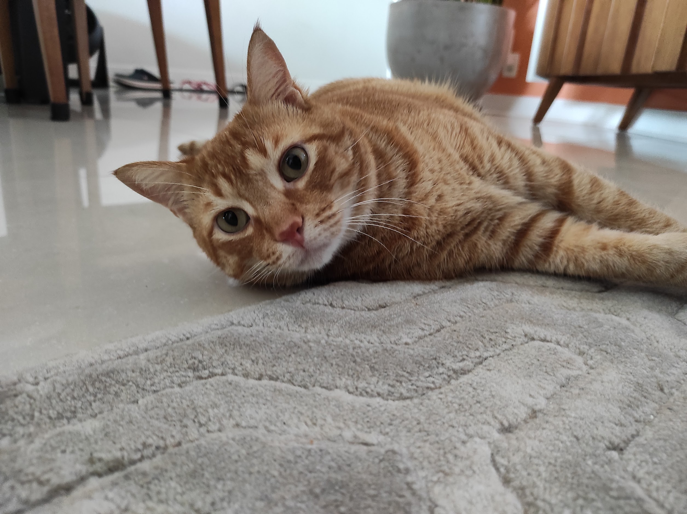
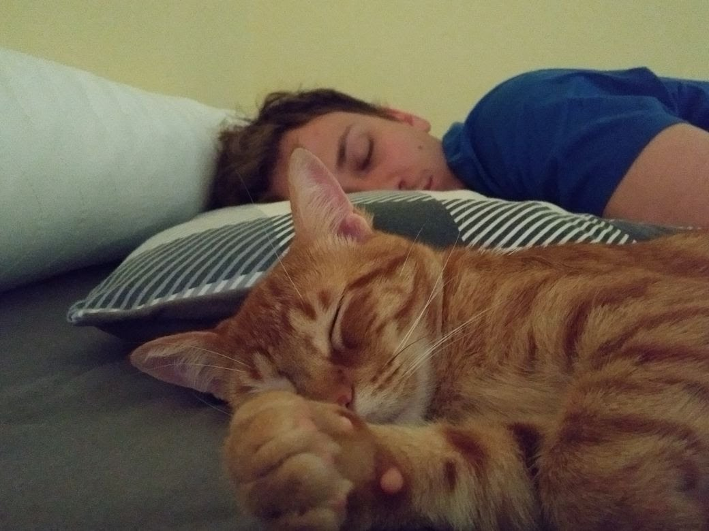
Bioinformatics
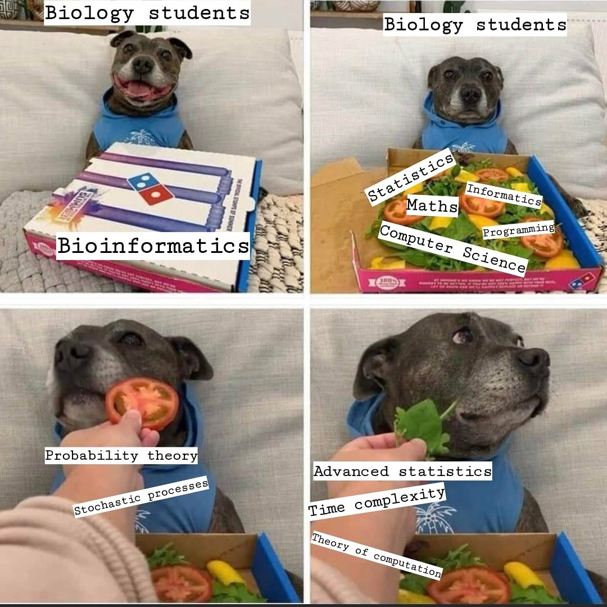
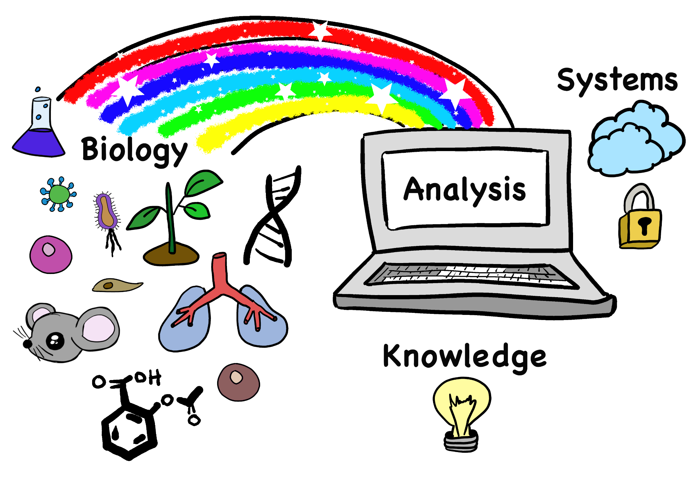

Introduce yourselves
Take 3 minutes to introduce yourself to your lab group.
Make a name tag so we begin to know you
Name and/or preferred name
Pronouns
Major/Year
Lab Safety
The lab is designed to be very secure for everyone. Please do the following:
Dispose of chemicals as instructed
Keep your work area neat and organized
Follow all instructions and procedures
Know the location of emergency equipment
Wear appropriate clothing and shoes
Ask if you have questions or are unsure of procedures
Lab Safety
Please don’t do the following:
Taste or smell reagents
Pour chemicals back into containers
Move a lit flame
Operate equipment you have not been instructed to use
Perform unauthorized experiments
Horseplay
Come to lab sick
Refer to pages IX - X in your lab manual if needed
Expectations
I expect you will…
Be on time and prepared
Follow all lab safety rules and etiquette
Complete all assignments using your own words and with integrity
Be prepared to stay the full length of lab
Respect all students, TAs, and TIs
Respect the lab and lab materials
Apply yourself and participate
Expectations
You can expect the TAs to…
Facilitate a welcome and inclusive learning environment
Consider respectful and constructive criticism
Create fair assessments of the material
Start and end class on time
Be available to answer questions during lab and office hours
Answer emails
Return assigned work in a timely manner
This lab is a safe space!
Ask questions, make mistakes, be kind. Don’t stress out or worry too much!
Academic Integrity
Please review the academic integrity section on the Syllabus. Predominantly, don’t cheat or plagiarize. I am required by contract to report cheating.
About AI tools (such as chatGPT), use it punctually, tell me when you use it, and double check the information it gives you.
22x Series Structure
GTAs (Gio and Mimi)
One term-long CURE (Course-Based Undergraduate Research Experience) per term
One individual product & One group product at the final of the term
Lecture: knowledge, from Cells to Ecosystems
Lab: skills, such as microscopy, pipette, computational tools, data analysis, etc.
Lab grade: based on assignments & attendance. I don’t really care about your manual – use it for your own learning process.
Canvas
Show Schedule and Grading Policy
Skills Demonstration
Test if you know how to use microscopes (1) and pipettes (2).
10 points each, pass or no-pass
Two attempts for each
Rubric in the lab manual, resources available on Canvas
Practice during lab as much as you want!
Ask us for “dummy” attempts if you’d like
During lab or office hours
Course-Based Undergraduate Research Project
Participate in an authentic research project, applying the scientific method
Master skills commonly used by professionals in the field
Please take a look at the overview section (pages xv ~ xix)
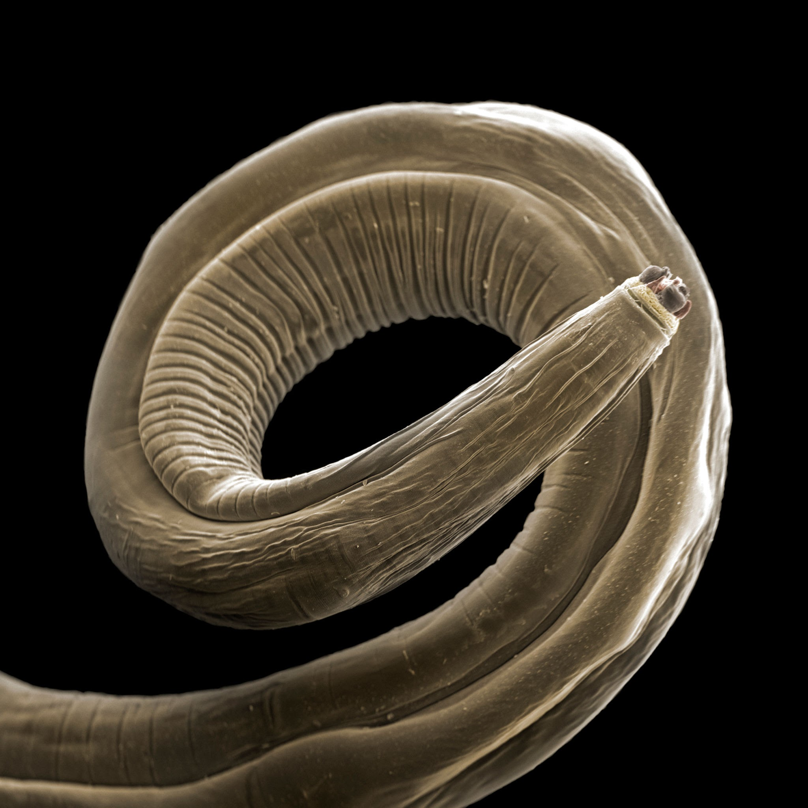
Rough outline of the steps
Collect soil
Isolate nematodes, collect visual data & extract DNA
PCR (DNA amplification)
Gel electrophoresis (DNA visualization)
Sequencing (if DNA is present)
Data Analysis
Late work policy
10% reduction each day late (including weekends)
Don’t worry too much! Communicate if you have any issues. I know life happens and sometimes we can’t keep up with the work folks give us
Daily lab Outline
Complete pre-lab (2 pts), on Canvas and due 30 minutes before lab
- No pre-lab for today, only Start Here Module due Friday
In-lab activities (4 pts)
- Attendance and participation taken on Signature sheets1
Make-up lab
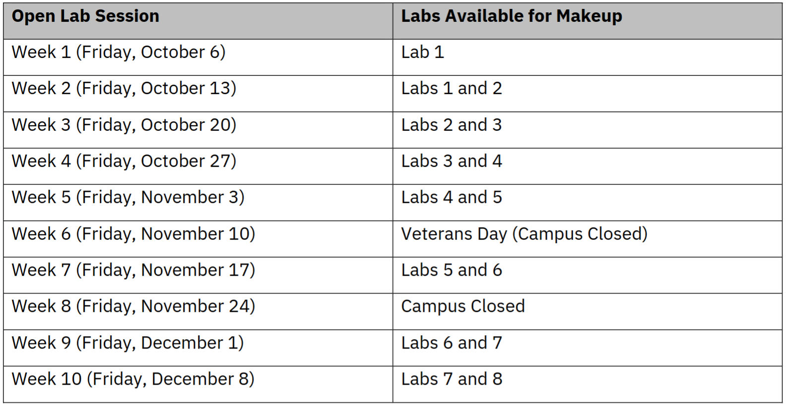Questions?
Lab 1 - Introductino to Microscopy and the Scientific Method
Housekeeping
| Assignment | Due |
|---|---|
| Start Here Module | Friday, 11:59 p.m. |
| Lab 2 Pre-lab | Wednesday, 10:30 a.m. |
Lab 1 Outline
Part 0: Syllabus and Term Introductions
Part 1: The Stereoscopic (Dissecting) Microscope
Part 2: The Compound Microscope
Part 3: The Scientific Method
The Scientific Method
What is science?
Study of the world through observation and experimentation
How do we do science?
Ask questions, propose informed explanations, and test the validty of those explanations
The Scientific Method
What are the components of good science?
- Conclusion/analysis
- Hypothesis
- Prediction
- Question
- Experiment
- Observation
Is there an specific order to them? Kind of, yes
An Example with Mice
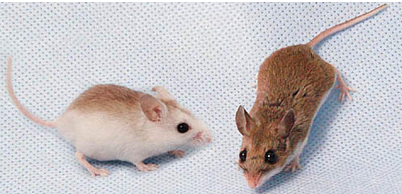
. . .
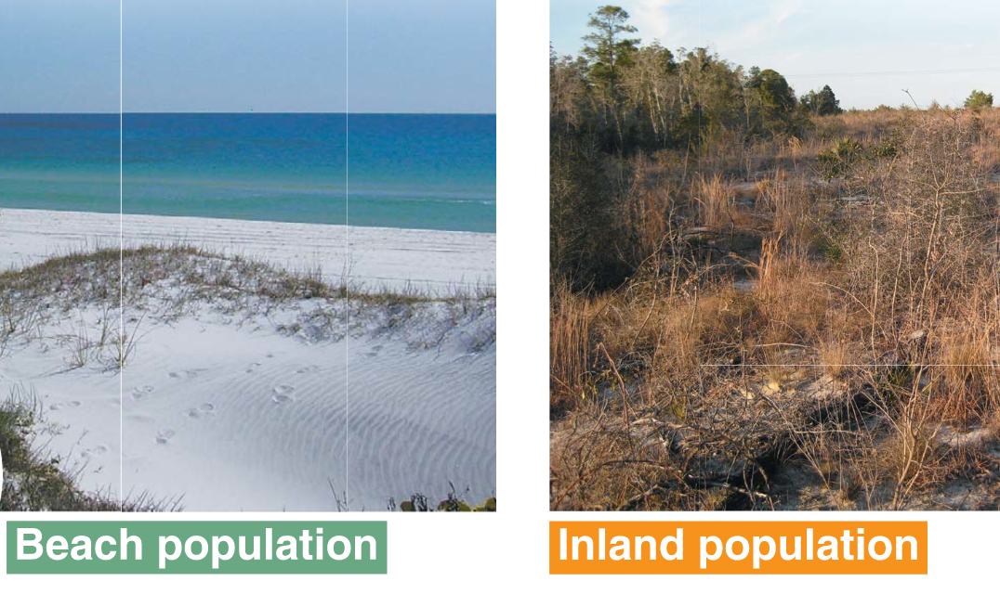
. . .
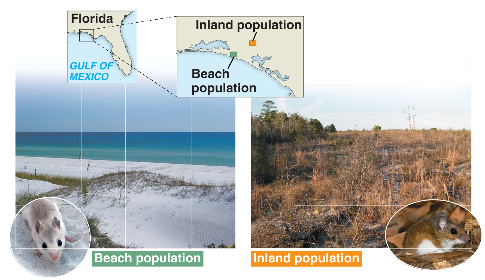
Question
What is a good example of a biological question you could ask? Q1!
Camouflage
Heat
???
Evaluating Information (Q4)
Evidence: what you know; direct observations; data
Qualitative (color, texture, taste, etc)
Quantitative (numbers, measurements, etc)
Inference: “Guess” based on evidence and outside information
Scientific Method: Hypothesis
A hypothesis is a proposed scientific explanation for how or why a phenomenon occurs
“Because” statement: X happens because of Y and Z
Can never be proven true! We can only provide evidence for or against.
Example: Marigolds are a good companion crop for tomatoes because they reduce nematodes.
Scientific Method: Prediction
A prediction is how the data should look if the hypothesis is true
If / then statement
If (hypothesis), then (expectations of what data will look like)
Example: If I plant marigolds next to my tomatoes, then I can produce more tomatoes.
Back to the mice
Hypothesis: there are different coat colors in different habitats, because it provides camouflage limiting predation
Scientific Method: Experiment
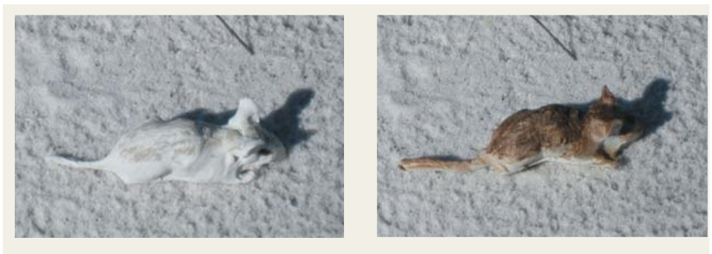Mouse models, white and tan. The experiment differs in only one factor at a time!
How does the data match the prediction?
How do the results tie into our previous understanding?
Here is a new prediction:
If the hypothesis is correct, then on the beach there will be more tan mice in the stomach contents of snakes than white mice.
What is the dependent (response) variable?
Mouse color
Location of snake
Number of mice eaten
If the hypothesis is correct, then on the beach there will be more tan mice in the stomach contents of snakes than white mice.
What will the graph look like?
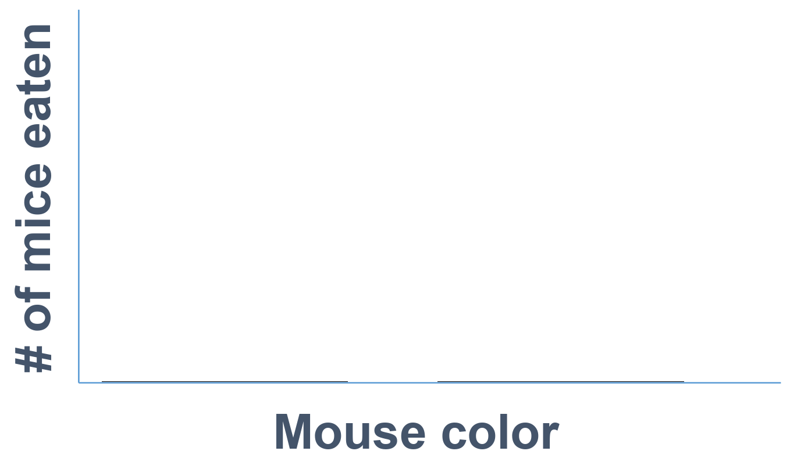If the hypothesis is correct, then on the beach there will be more tan mice in the stomach contents of snakes than white mice.
What will the graph look like?
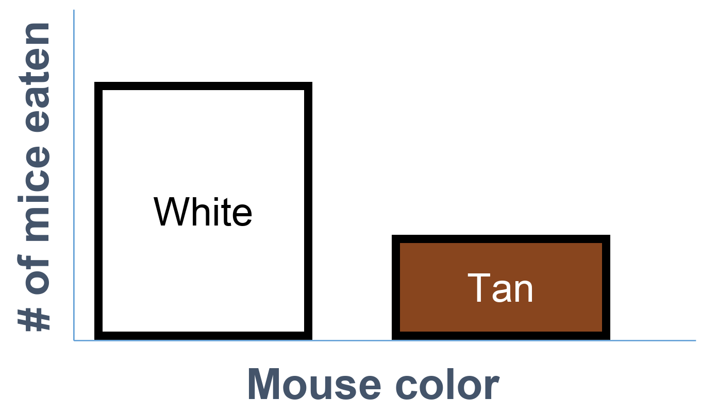Microscopes
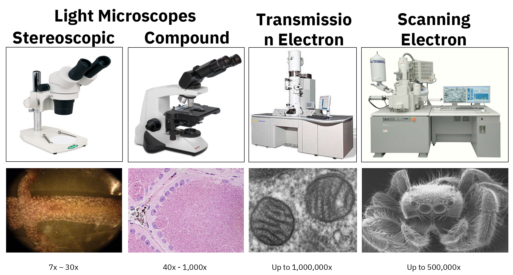Stereoscopical Microscope
- Lower magnification
- Incident light
- Dissecting or studying the surface of a sample
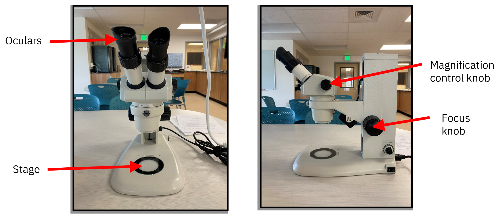
Compound light microscope
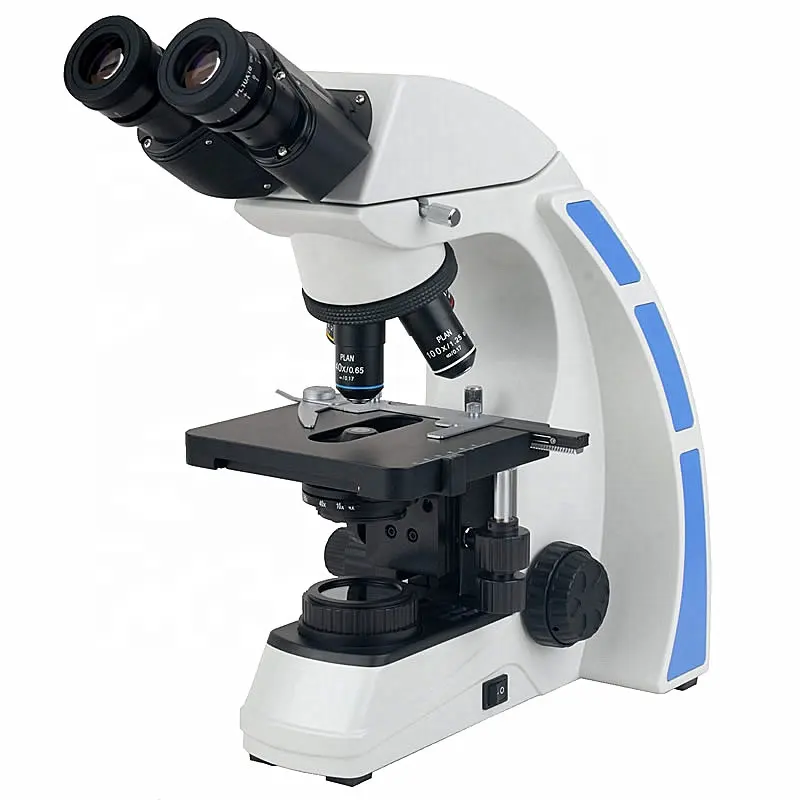Compound light microscope
Always start on the lowest power
Use the coarse and fine adjustment knobs to focus specimen on low power
Move to the next power and switch to only focusing using the fine adjustment knob
Make sure you watch as you are increasing magnification. You may not be able to go to 40X when using thicker slides
When finished, remove and clean slide, return microscope to low power, turn off and wrap cord, places coverslip in Glass Disposal
Lab cleaning/Safety
Part I: Properly store microscopes – remove slide, move to lowest magnification lens, turn off, unplug and wrap cord, cover
Part II: Dispose of glass COVERS. DO NOT dispose of slides (unless they’re broken) - cover slips go in glass disposal. Wash depression slides and put back at table
General: Use the iris diaphragm to adjust light. There are 2 of each scope on your tables – use them both!
DO NOT leave anything by the sink. Everything at your table should be the same as when you got here